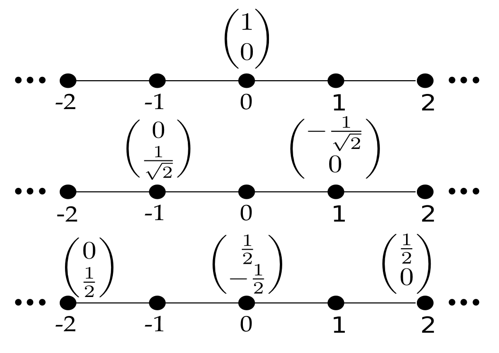
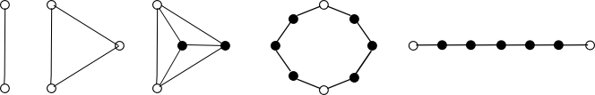

Discrete time quantum walks are analogues of classical random walks, which evolve in ways which are consistent with the laws of quantum mecahnics. Roughly that means that their evolution is time reversible, or it doesn't matter what direction you run time in, and classical notions such as being in one place or state at a time, or having simultaneously defined momentum and position, don't apply. Classical random walks evolve accoring to two operations, a coin flip and a shift. The coin flip tells you whether to go left or right, usually with equal probability of either. The shift then moves you. Its the same for a quantum walk, except the coin makes you go both left and right at the same time. The fact that you go a little bit left, and a little bit right, on each step of the walk (as shown in the image below), combined with interference, means that the quantum walk moves you along the line much faster than the classical random walk. This makes sense given that with a classical random walk, your expected position at every time step is exactly where you started!
In fact, the walk on the line, the one I've shown you, is quite boring. And it was solved analytically in 2001, which given the research communities justified preference for analytical rather than numerical results, makes simulating them quite pointless. More interestingly, you can define quantum walks over arbitrary structures, such as these:
There are two main threads to research into discrete time quantum walks, looking at transport properties-where they go, and how fast- and their algorithmic applications. In fact, their good transport properties are taken advantage of in algorithmic applications, so we can basically boil it down to one application. Any algorithm can be computed by a discrete time quantum walk, as they are computationally universal, hence they are considered computational primitives. That means that the can perform any quantum computation to arbitrary precision. This was shown by using them to simulate quantum circuits. More recently, I used them to solve language recognition problems.
Disclaimer: this is a horribly imprecise and swift introduction to discrete time quantum walks. This is on the basis that I don't think lay people want to know what a state vector is or are too bothered about how to guarantee unitarity. If you are bothered, please consult any research paper with a decent introduction to quantum walks. If you're really really bothered, apply for a PhD in quantum information. It will be the best and worst four years of your life. For a general introduction to quantum information theory, quantiki is great